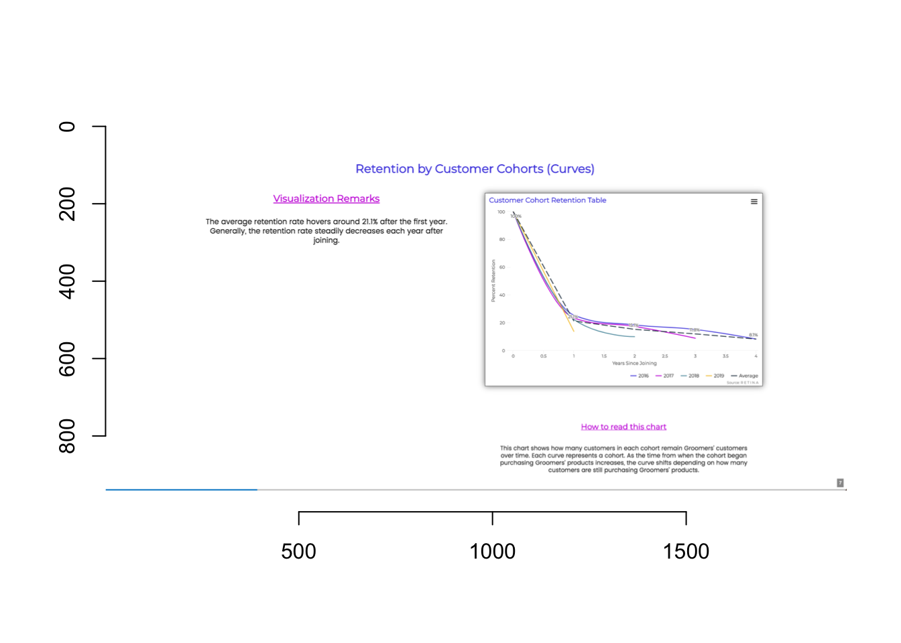
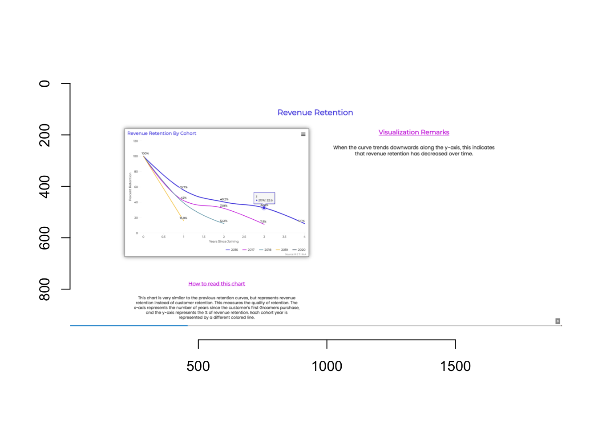

Team Name: Datalicious
Team Members: Cloris He, Kevin Cheung, Mira Daya
Team Members Email: huiyinh2@uci.edu, kmcheun1@uci.edu, mdaya@uci.edu
Designated Slides: 7,8
Slide Number: 7

Key Insights :
Groomers’ customers leave at a rapid rate within their first year of joining the company. Business Implications and Suggestions:
Groomer’s most loyal cohort is those customers that joined in 2016. Business Implications and Suggestions:
Slide Number: 8

Key Insights:
Business Implication:
The 2019 cohort shows the least revenue retention compared to all other active cohorts in year 1.
The 2018 cohort shows the least revenue retention compared to all other active cohorts in year 2.
The 2017 cohort shows the least revenue retention compared to all other active cohorts in year 3.
The 2016 cohort represents the most revenue retention by cohort.
Business Implication:
## [1] "There is a steep decline in percent retention in year 1 for cohort 2016 . Customers in this cohort are more likely to stop purchasing products at Groomers within 1 year of their first purchase"
## [1] "There is a steep decline in percent retention in year 1 for cohort 2017 . Customers in this cohort are more likely to stop purchasing products at Groomers within 1 year of their first purchase"
## [1] "There is a steep decline in percent retention in year 1 for cohort 2018 . Customers in this cohort are more likely to stop purchasing products at Groomers within 1 year of their first purchase"
## [1] "There is a steep decline in percent retention in year 1 for cohort 2019 . Customers in this cohort are more likely to stop purchasing products at Groomers within 1 year of their first purchase"## [1] "The slope for the 2016 Cohort is: -19.41 . The slope is negative meaning that customer retention decreases with time."
## [1] "The slope for the 2017 Cohort is: -21.45 . The slope is negative meaning that customer retention decreases with time."
## [1] "The slope for the 2018 Cohort is: -22.22 . The slope is negative meaning that customer retention decreases with time."
## [1] "The slope for the 2019 Cohort is: -21.36 . The slope is negative meaning that customer retention decreases with time."
## [1] "Cohort 2018 has the steepest slope, meaning that customer retention rate has the greatest change."## [1] "2016 cohort has the highest retention rate in year 0"
## [1] "2016 cohort has the highest retention rate in year 1"
## [1] "2016 cohort has the highest retention rate in year 2"
## [1] "2016 cohort has the highest retention rate in year 3"
## [1] "2016 cohort has the highest retention rate in year 4"## [1] "The slope for 2016 Cohort is: -19.89 . Revenue retention is decreasing with time."
## [1] "The slope for 2017 Cohort is: -23.09 . Revenue retention is decreasing with time."
## [1] "The slope for 2018 Cohort is: -23.9 . Revenue retention is decreasing with time."
## [1] "The slope for 2019 Cohort is: -21.58 . Revenue retention is decreasing with time."
## [1] "Cohort 2018 has the steepest slope, meaning that customer retention rate has the greatest change."## [1] "2019 cohort has the minimum revenue retention rate in year 1"
## [1] "2018 cohort has the minimum revenue retention rate in year 2"
## [1] "2017 cohort has the minimum revenue retention rate in year 3"
## [1] "2016 cohort has the minimum revenue retention rate in year 4"## [1] "2016 cohort has the highest revenue retention rate in year 0"
## [1] "2016 cohort has the highest revenue retention rate in year 1"
## [1] "2016 cohort has the highest revenue retention rate in year 2"
## [1] "2016 cohort has the highest revenue retention rate in year 3"
## [1] "2016 cohort has the highest revenue retention rate in year 4"